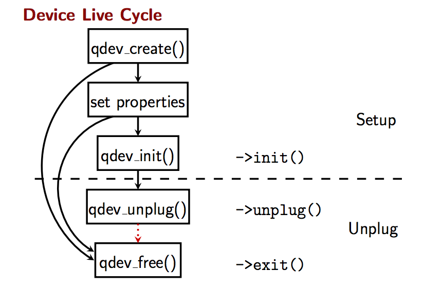

QEMU设备模型（QEMU Device Model）是用来模拟真实世界中计算的各种物理设备的一种抽象模型，例如Flappy（-fda），IDE Ddisk（-hda），ATAPI CD（-cdrom），Network（-net nic），Sound（-soundhw），Graphics（-vga）以及CPU（-cpu）等等。
QEMU的设备模型发展历史可以用下图来概括：

ad hoc模型
QEMU在早期（2009之前）采用的是ad hoc模型，即点对点模式，相关的设备直接连接，这导致了某个模拟设备，如CPU，可能需要同时和多个设备直接连接，不能支持热拔插设备，因为这种模式，改变一个设备的配置，往往需要改变系统中其他相关设备的配置。这种模式下，各种模拟设备没有一个统一的数据通信机制，系统结构显得十分杂乱无章，整个系统十分复杂，并且效率极低。
Qdev模型
在这个一切都谈套路的世界中，QEMU社区有必要设计出一套高效的设备模型。2009年，由Paul Brook主导，开发了第二版设备模型——Qdev（QEMU Device Model Abstraction）。这种模式将计算机各种设备以单根节点树的形式来组织，并且这些设备之间是通过buses（类似于物理计算中的数据总线）来相互连接的。典型的结构如下图所示：

这种模型相对于先前的ad hoc模型的好处在于：
- 设备之间解耦，使得某个设备的控制及配置可以独立于其他的设备。
- 支持设备热拔插（hot-plug）。
- 每个设备都有自己的属性，并且可以基于buses定于统一的API接口。
- 整个系统在结构上十分清晰、简单。
整个设备的生命周期可用如下函数调用来简单表示：

QOM（QEMU Object Model）模型
后来人们发现，Qdev模型过于简单，因为设备与设备之间不应该仅仅是通过buses连接那么单纯的关系，这也是影响IRQ等性能的主 要因素。因此，2012年Anthony Liguori一帮人又开发QOM模型。 在QOM模型中，一切皆设备。在Qdev中，总线和设备是是平级的关系，但是在QOM中，总线只是设备的接口。在QOM中设备与设备之间两种关系：
- 一个设备是另一个设备的组成部分（子设备）
- 子设备反向连接至父设备。
Qdev与QOM的区别主要表现在：设备之间的关系，设备命名以及设备的属性三个方面。具体请参考wiki.qemu.org